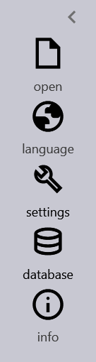
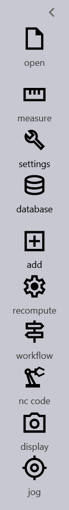
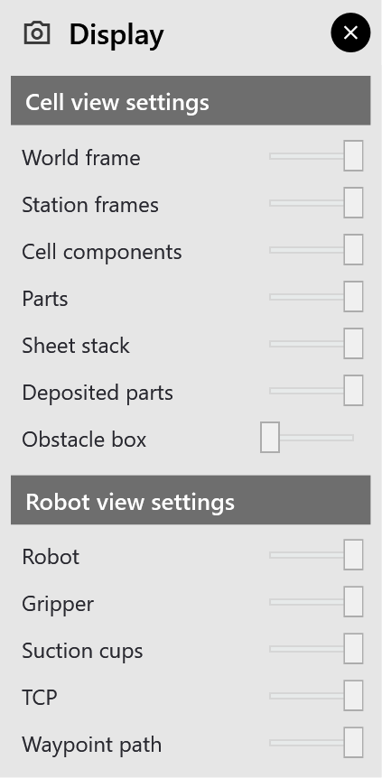
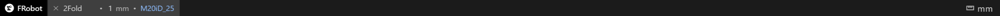

The screen

The window has five areas:
-
The title bar at the top, with the menus and, once a cycle is planned, the phase strip.
-
The tool rail down the left side.
-
The 3D view in the middle.
-
The bottom bar.
-
Floating panels that open over the 3D view when you need them.
The title bar and the menus
On the left are the FRobot logo and the menus File, Edit, View and Help. Alt+F, Alt+E, Alt+V and Alt+H open them from the keyboard. On the right are Minimize, Maximize and Close.
|
Note
|
The menus show shortcuts such as Ctrl+O, Ctrl+S and F4, but in this version the shortcuts do not work. Use the menus or the tool rail. The keys that do work are listed in Reference. |
The menu items that work:
| Menu | Item | What it does |
|---|---|---|
File |
New ▸ Create New Cell |
Starts an empty cell on a robot you choose: A new cell |
File |
Open… |
Opens a solution (.fr), a cell config (.curl) or a part’s drawing (.dxf, .geo) |
File |
Save |
Saves the solution (.fr); before a solution exists, saves the cell as a cell config |
File |
Save Cell Config |
Saves the cell under a name, for its robot: Cell configs |
File |
Save As… |
Saves the solution under a new name |
File |
Import ▸ Gripper |
Imports a gripper (a mesh with its .DAT file): Importing a gripper |
File |
Import ▸ Cell Component |
Imports a cell element from a STEP, STL or OBJ file: Adding stations |
File |
Import ▸ STEP Geometry |
Imports a STEP part as an obstacle: Obstacles |
File |
Tools ▸ Post-Processor… |
Opens Machine Defaults |
File |
Exit |
Closes FRobot; it asks first about unsaved solutions |
File |
the two numbered rows |
The last two solutions or cell configs you opened or saved in this session (drawings are not listed) |
View |
Zoom Extents |
Fits the whole cell into the 3D view |
View |
Close All Windows |
Hides every floating panel, including the Workflow window |
View |
World Frame |
Shows or hides the world-frame axes |
View |
TCP Legend |
Shows which colour is which axis of the TCP: X red, Y green, Z blue |
Help |
Experimental Features… |
Diagnostic views and the planner switches: Re-planning |
Items that only show a "not in this prototype" message are listed in Not available yet.
The tool rail
The rail on the left holds FRobot’s tools. Which tools it shows depends on how far you are.
Before a solution exists:

| Button | What it does |
|---|---|
open |
Opens a solution, a cell config or a drawing (the same as File ▸ Open…) |
language |
Not available yet |
measure |
Measures between two points (appears once a part’s drawing is open): Measuring |
workflow |
Opens the Workflow window (appears once a part’s drawing is open) |
add |
Adds cell items, machines, components or a part (appears for a new cell): Adding stations |
jog |
Moves the robot by hand (appears for a new cell): A new cell |
settings |
A menu: Tooling, Part, Frames, Output, Obstacle Box, Collision Triangles, Machine Defaults |
database |
A menu: Robots (to switch robot), Grippers (the Gripper Database) |
info |
About FRobot (see Not available yet) |
Once a solution exists the rail changes to the full set:

| Button | What it does |
|---|---|
open, measure, settings, database, add |
As above |
recompute |
Plans the cycle again, with a planner you choose: Re-planning |
workflow |
Opens or closes the Workflow window |
nc code |
Writes the robot program: Writing the robot program |
display |
Chooses what the 3D view shows: Display |
jog |
Moves the robot by hand |
-
The button of an open tool is tinted blue. Clicking it again closes the tool.
-
add, settings and database open a small menu to the right. Click an entry, or Cancel.
-
The ‹ at the top of the rail narrows it to icons only; › widens it again.
The 3D view
| To | Do this |
|---|---|
Rotate the view |
Drag with the left mouse button, starting on empty background. Near a straight view (front, top …) it snaps to it. |
Pan |
Drag with the middle mouse button |
Zoom |
Turn the mouse wheel; it zooms about the pointer |
Fit everything in view |
View ▸ Zoom Extents, or Ctrl+E with the pointer over the 3D view |
Select something |
Click it (a click never rotates the view) |
Clear the selection |
Click on empty space without dragging |
Stop a rotate or pan |
Press Esc while dragging; the view stays where it is |
Clicking an object opens what belongs to it:
| You click | What opens |
|---|---|
The part stack on the pickup pallet |
The robot goes to the pickup and the Pickup panel opens: The pickup |
The part on the centering table |
The Centering panel |
The folded part on the deposit or the Overturner (in a cell with a bending machine) |
The Deposit or Regrip panel |
The gripper |
The Gripper panel: Choosing a gripper yourself |
A cell element (pallet, table, machine …) |
It turns blue and the Frames panel opens beside it: Frames and roles |
The small sphere at the TCP |
The TCP Offset dialog: The TCP |
An imported STEP part |
The Part panel: Obstacles |
The obstacle box or a collision triangle |
The robot moves to it |
A selected part or gripper is drawn in orange.
The display panel
display on the rail (once a solution exists) opens switches for what the 3D view draws. Slide a switch right for on, left for off. These settings are not saved.

The bottom bar

The bottom bar holds one block for each open solution: see Several solutions at once. The active block shows the part and lets you change it:
-
The part name. Type a new name and press Enter, or leave the box. It becomes the solution’s name: the next Save writes the solution under it. The robot program keeps the drawing’s name.
-
The thickness (once the 3D part exists). Type a value and press Enter to rebuild the part with that thickness. Leaving the box without Enter puts the old value back.
-
The robot (once a solution exists). Click it to open the robot selector: A new cell.
-
The ✕ before the name closes that solution.
mm at the right shows the unit. FRobot always works in millimetres.
Floating panels
Panels open over the 3D view. There are three kinds:
-
Settings panels (Jog, Tooling, Part, Frames, Output, Display, Obstacle Box, Collision Triangles).
-
Only one is open at a time; opening another replaces it.
-
Drag the header to move it, and close it with its round ✕.
-
A click elsewhere puts it away.
-
-
Object panels (Pickup, Centering, Deposit, Regrip, Gripper) open where you clicked the object.
-
Pin to location keeps one open while you work elsewhere.
-
The collapse button, or a double-click on the header, folds it to its header.
-
Unless pinned, it closes when you click elsewhere.
-
-
Tool windows:
-
Workflow and Waypoints stay open until you close them; for Workflow, clicking its rail button again also closes it.
-
Measure stays open while you measure.
-
Recompute and the Gripper Database close when you click elsewhere. The Gripper Database can be pinned.
-
Number fields
In the panels, a number you type is not used until you press Enter:
-
While you type, the field is marked as pending.
-
Enter applies every pending field of the panel together.
-
Esc throws the typed values away.
-
Tab and Shift+Tab move between the number fields.
The small up and down arrows, and the mouse wheel over a field, apply a step at once. Hold Shift for a smaller step.
Messages
FRobot tells you what happened in five ways:
-
Toasts: a dark card at the bottom centre of the window for a few seconds, for example Solution saved: 2Fold.fr.
-
Dialogs for questions and warnings, such as Path planning — out of reach.
-
The phase strip, whose colours show the state of each phase of the cycle: The phase strip.
-
A status line in green at the foot of the Part and Frames panels, with the result of the last action.
-
Short notes in dark text at the bottom right of the 3D view, which fade after a few seconds.
While a solution is being planned, the window is dimmed and a card at the bottom left says so: see Creating the solution.